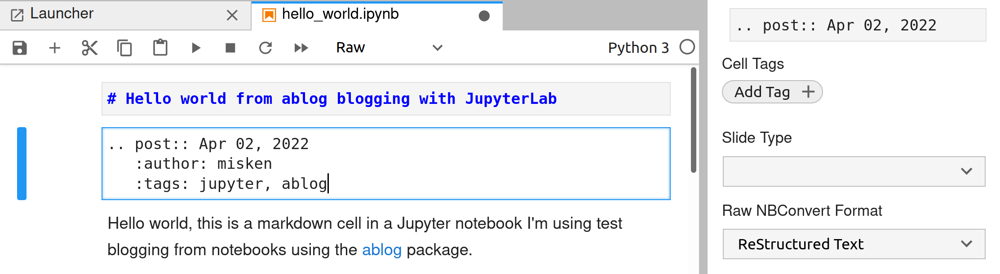

Hello world from ablog blogging with JupyterLab#
Hello world, this is a markdown cell in a Jupyter notebook I’m using to test blogging from notebooks using the ablog package.
The top cell should be a markdown cell with the title of the blog post.
The second cell is the ablog post directive that includes the post metadata. IMPORTANT While the ablog docs show an example, a few key details aren’t totally explicit.
the cell should be set to Raw format
AND (and this is what cost me a bunch of time) it needs to be further formatted using the Raw NBConvert Format drop-down and set to restructuredText. In Jupyter Lab, you need to turn on the right sidebar to see this dropdown.
The corresponding cell metadata looks like this in the .ipynb file:
"cell_type": "raw",
"metadata": {
"raw_mimetype": "text/restructuredtext"
},
Now you are ready to go and write your blog post directly from your Jupyter notebook.
Some basic examples#
[2]:
x = 5 + 6
print(f'x is {x}')
x is 11
Let’s display image display since we’ll need this for blogging.
[4]:
from IPython.display import Image
Image(filename='images/raw_nbconvert.png')
[4]:

[ ]: